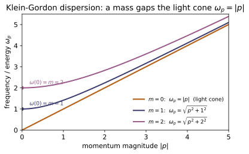
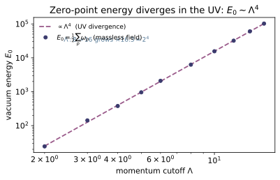
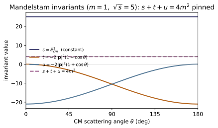
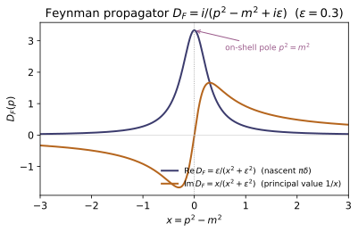
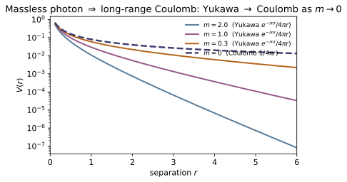
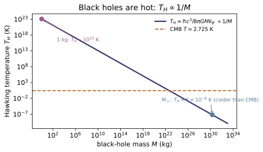

QF-01 — Canonical Field Quantization
Quantum Field Theory trunk · QF/QF-01_canonical_quantization · open in the Teaching Network
Canonical quantization turns a classical field into a quantum one by the same rule that quantizes a particle. From a Lagrangian density $\mathcal L$ one reads off the canonical momentum $\pi=\partial\mathcal L/\partial(\partial_0\phi)$ and imposes the equal-time commutator $[\phi(\mathbf x),\pi(\mathbf y)]=i\hbar\,\delta^3(\mathbf x-\mathbf y)$, the field analogue of $[x,p]=i\hbar$. Fourier-expanding the Klein–Gordon field into modes with dispersion $\omega_{\mathbf p}=\sqrt{\mathbf p^2c^2+m^2c^4}/\hbar \to\sqrt{\mathbf p^2+m^2}$ (massless $\to|\mathbf p|$) reveals that each mode is an independent harmonic oscillator with ladder operators $a_{\mathbf p},a_{\mathbf p}^\dagger$ and spectrum $(n_{\mathbf p}+\tfrac12)\hbar\omega_{\mathbf p}$ — KEY BRIDGE B6. Stacking quanta with $a^\dagger$ on the vacuum builds the Fock space of multi-particle states (second quantization: particle number is now dynamical), while the leftover $\tfrac12$ per mode sums to the UV-divergent vacuum / zero-point energy $\tfrac12\sum_{\mathbf p}\hbar\omega_{\mathbf p}$, which the code regularizes with a cutoff and shows growing like $\Lambda^4$ — the divergence that motivates renormalization (~QF-04). The module closes with the two refinements canonical quantization forces on other fields: the Dirac field needs anticommutators $\{b,b^\dagger\}$ (spin–statistics, Pauli exclusion, ~QM-14), and the EM field carries a gauge constraint $\pi^0=0$ that must be fixed before quantizing (~QF-03, ~EM-09).
Key equations
Figures


Example problems
Each Fourier mode of the free scalar field obeys $\ddot\phi_{\mathbf p}= -\omega_{\mathbf p}^2\phi_{\mathbf p}$ with $\omega_{\mathbf p}=\sqrt{\mathbf p^2+m^2}$. Show this is the relativistic $E^2=p^2+m^2$ read as a frequency; that a massless field gives $\omega_{\mathbf p}=|\mathbf p|$ (the light cone); that at $\mathbf p=0$ the frequency is the rest energy $\omega=m$; and that $\omega_{\mathbf p}\to|\mathbf p|$ in the ultrarelativistic limit $|\mathbf p|\gg m$. Check: kg_dispersion([0,1,5], 0.0) $=[0,1,5]$; kg_dispersion(0.0, 2.0) $=2.0$; kg_dispersion(1e6, 1.0) $\approx10^6$.
A single Fourier mode obeys $\ddot\phi_{\mathbf p}=-\omega_{\mathbf p}^2\phi_{\mathbf p}$, the equation of a harmonic oscillator whose frequency is the energy of one quantum ($E=\hbar\omega$, $\hbar=1$). Squaring the dispersion turns it into the relativistic energy–momentum relation read as a frequency,
Massless $m=0$ gives $\omega_{\mathbf p}=|\mathbf p|$ — the light cone, energy equal to momentum (kg_dispersion([0,1,5],0.0)$=[0,1,5]$). At $\mathbf p=0$, $\omega=\sqrt{0+m^2}=m$, the rest energy $mc^2$ (kg_dispersion(0.0,2.0)$=2.0$). For $|\mathbf p|\gg m$, $\omega=|\mathbf p|\sqrt{1+m^2/\mathbf p^2}\approx|\mathbf p|(1+m^2/2\mathbf p^2)\to|\mathbf p|$, so a fast quantum forgets its mass: kg_dispersion(1e6,1.0)$\approx10^6$.
~QM-09From the equal-time commutator $[\phi,\pi]=i\delta^3$, derive the mode relation $[a_{\mathbf p},a_{\mathbf q}^\dagger]=(2\pi)^3\delta^3(\mathbf p-\mathbf q)$ — one copy of the oscillator's $[a,a^\dagger]=1$ per mode. Then prove no finite matrices satisfy $[a,a^\dagger]=1$ (hint: take the trace), and say what the truncated $D\times D$ operators give instead. Check: np.diag(commutator(annihilation(6), creation(6))).real $=[1,1,1,1,1,-5]$ (identity on the interior, $-(D{-}1)$ in the corner) and np.trace(...) $=0$.
Insert the mode expansion $\phi=\int\!\tfrac{d^3p}{(2\pi)^3}\tfrac{1}{\sqrt{2\omega_{\mathbf p}}}(a_{\mathbf p}e^{i\mathbf p\cdot\mathbf x}+a_{\mathbf p}^\dagger e^{-i\mathbf p\cdot\mathbf x})$ and its conjugate $\pi=\dot\phi$ into $[\phi(\mathbf x),\pi(\mathbf y)]=i\delta^3(\mathbf x-\mathbf y)$; the delta function is reproduced exactly when the modes obey
one independent oscillator $[a,a^\dagger]=1$ per momentum. No finite matrices can satisfy $[a,a^\dagger]=1$: the trace is cyclic, so $\operatorname{tr}[A,B]=\operatorname{tr}(AB)-\operatorname{tr}(BA)=0$, yet $\operatorname{tr}\mathbb 1_D=D\neq0$ — a contradiction needing the infinite ladder. Truncating to $D$ levels drops the rung $a^\dagger|D{-}1\rangle=\sqrt D\,|D\rangle$, dumping the whole defect into one corner: $[a,a^\dagger]=\operatorname{diag}(1,\dots,1,-(D{-}1))$. For $D=6$ that is np.diag(commutator(annihilation(6),creation(6))).real$=[1,1,1,1,1,-5]$ with np.trace(...) $=0$.
From $H_{\mathbf p}=\omega_{\mathbf p}(a_{\mathbf p}^\dagger a_{\mathbf p}+\tfrac12)$ and a lowest rung $a_{\mathbf p}|0\rangle=0$, deduce the per-mode spectrum $E_{n_{\mathbf p}}=(n_{\mathbf p}+\tfrac12)\hbar\omega_{\mathbf p}$ with ground (zero-point) energy $\tfrac12\hbar\omega_{\mathbf p}$ — without solving a differential equation (the ~QM-09 argument, now per mode). Check: single_mode_spectrum(6, omega=1.0) $=[0.5,1.5,2.5,3.5,4.5,5.5]$; for $|\mathbf p|=3,m=4$ ($\omega=5$) mode_energy(3.0, 4.0, 0) $=2.5=\omega/2$ and mode_energy(3.0, 4.0, 1) - mode_energy(3.0, 4.0, 0) $=5=\omega$.
With $N=a_{\mathbf p}^\dagger a_{\mathbf p}$ and $[a,a^\dagger]=1$, the commutators $[N,a^\dagger]=a^\dagger$ and $[N,a]=-a$ make $a^\dagger,a$ step $N$ up and down by one — the ladder. Positivity $\langle n|N|n\rangle=\lVert a|n\rangle\rVert^2\ge0$ forbids negative eigenvalues, so lowering must terminate at a floor $a_{\mathbf p}|0\rangle=0$ with $N|0\rangle=0$; climbing with $a^\dagger$ then gives $n=0,1,2,\dots$ Hence
The floor is not zero: an empty mode still carries the zero-point energy $\tfrac12\omega_{\mathbf p}$. For $\omega=1$, single_mode_spectrum(6, omega=1.0)$=[0.5,1.5,2.5,3.5,4.5,5.5]$; for $|\mathbf p|=3,m=4$ the dispersion gives $\omega=\sqrt{9+16}=5$, so mode_energy(3.0,4.0,0)$=\omega/2=2.5$ and one quantum costs mode_energy(3.0,4.0,1) - mode_energy(3.0,4.0,0)$=\omega=5$ — the ~QM-09 argument, now per mode.
Summing the $\tfrac12\hbar\omega_{\mathbf p}$ of every mode gives the vacuum energy $E_0=\tfrac12\sum_{\mathbf p}\hbar\omega_{\mathbf p}=\tfrac{V}{2}\int\!\frac{d^3p}{(2\pi)^3}\, \omega_{\mathbf p}$. Show the integrand goes like $p^3\,dp$ at large $p$, so $E_0$ diverges in the ultraviolet; with a cutoff $|\mathbf p|\le\Lambda$ argue the massless energy density scales like $\Lambda^4$, so doubling $\Lambda$ multiplies $E_0$ by $\approx16$. Check: vacuum_energy(0.0, 1.0) $=3.0$; the ratios vacuum_energy(0.0, 4.0)/vacuum_energy(0.0, 2.0) and vacuum_energy(0.0, 8.0)/vacuum_energy(0.0, 4.0) are both $>4$ (and approach $16$).
Each mode contributes its zero-point $\tfrac12\omega_{\mathbf p}$; summing over the continuum and doing the angular integral,
At large $p$, $\omega_{\mathbf p}\to|\mathbf p|$, so the integrand behaves as $p^2\cdot p\,dp=p^3\,dp$ and the integral diverges in the ultraviolet. With a cutoff $|\mathbf p|\le\Lambda$ the massless energy density is $E_0/V\sim\int_0^\Lambda p^3\,dp\sim\Lambda^4$, so doubling $\Lambda$ multiplies $E_0$ by $\approx2^4=16$. The discrete box check shows the onset: vacuum_energy(0.0, 1.0)$=3.0$ (the six $|\mathbf p|=1$ axis modes, $\tfrac12\cdot6\cdot1$), while the doubling ratios $379.28/24.41\approx15.5$ and $6290.9/379.28\approx16.6$ both exceed $4$ and climb toward $16$ as the lattice better samples the integral — the divergence renormalization must tame (~QF-04).
Explain why a heavier field has a larger zero-point energy at fixed cutoff ($\omega_{\mathbf p}=\sqrt{\mathbf p^2+m^2}$ rises with $m$). Then take a cutoff so small that only the $\mathbf p=0$ mode survives, and show $E_0=\tfrac12 m$ for a massive field but $E_0=0$ for a massless one (the photon has no rest energy). Check: vacuum_energy(2.0, 0.5) $=1.0=\tfrac12 m$ while vacuum_energy(0.0, 0.5) $=0.0$; and vacuum_energy(3.0, 4.0) > vacuum_energy(0.0, 4.0).
Mode by mode, $\omega_{\mathbf p}=\sqrt{\mathbf p^2+m^2}$ is an increasing function of $m$, so at fixed cutoff every term of $E_0=\tfrac12\sum_{\mathbf p}\omega_{\mathbf p}$ grows with the mass and the total rises — vacuum_energy(3.0, 4.0)$>$vacuum_energy(0.0, 4.0) ($462.4>379.3$). Now shrink the cutoff below the first nonzero box momentum (here $|\mathbf p|=1$) so only the zero mode $\mathbf p=0$ survives. Then
giving vacuum_energy(2.0, 0.5)$=\tfrac12\cdot2=1.0$ for the massive field, but $\tfrac12\sqrt{0}=0$ for the massless one, vacuum_energy(0.0, 0.5)$=0.0$. The single surviving quantum is just the rest energy $\tfrac12 m$ of the field at rest; a photon ($m=0$) has none.
~QM-14Quantizing the spin-$\tfrac12$ field with commutators makes $H$ unbounded below; the fix is anticommutators $\{b_{\mathbf p},b_{\mathbf q}^\dagger\}=(2\pi)^3\delta^3(\mathbf p-\mathbf q)$. Show that this forces $(b^\dagger)^2=0$ — the Pauli exclusion principle — so a fermion mode holds only $0$ or $1$ quantum, unlike a boson mode (which holds any number). Check: with b = fermion_annihilation(), anticommutator(b, b.conj().T) $=\mathbb 1_2$ and b.conj().T @ b.conj().T $=0$; the fermion number $b^\dagger b$ has eigenvalues $\{0,1\}$ whereas np.diag(number(5)).real $=[0,1,2,3,4]$.
Quantizing the spin-$\tfrac12$ field with commutators makes $H$ unbounded below; the cure is the equal-time anticommutator $\{b_{\mathbf p},b_{\mathbf q}^\dagger\}=(2\pi)^3\delta^3(\mathbf p-\mathbf q)$, together with $\{b,b\}=\{b^\dagger,b^\dagger\}=0$. The same-mode relation $\{b^\dagger,b^\dagger\}=2(b^\dagger)^2=0$ gives
so a second quantum cannot be created in an occupied mode — the Pauli exclusion principle. The number operator is then idempotent: using $bb^\dagger=1-b^\dagger b$, $(b^\dagger b)^2=b^\dagger(bb^\dagger)b=b^\dagger(1-b^\dagger b)b=b^\dagger b$, so its eigenvalues are only $\{0,1\}$. Numerically anticommutator(b, b.conj().T)$=\mathbb 1_2$, b.conj().T @ b.conj().T$=0$, and $b^\dagger b$ has spectrum $\{0,1\}$: a fermion mode holds $0$ or $1$ quantum, whereas the boson number runs unbounded, np.diag(number(5)).real$=[0,1,2,3,4]$.
From the algebra derive $a^\dagger|n\rangle=\sqrt{n+1}\,|n+1\rangle$, $a|n\rangle=\sqrt{n}\,|n-1\rangle$, and $a|0\rangle=0$: one $a_{\mathbf p}^\dagger$ on the vacuum creates one particle of momentum $\mathbf p$, and because the $a^\dagger$ commute the multi-particle states are symmetric (bosons, ~QM-14). Check: creation(6) @ e2 $=\sqrt3\,|3\rangle$ (with e2 the unit vector $|2\rangle$), annihilation(6) @ e0 $=0$, and np.diag(number(6)).real $=[0,1,2,3,4,5]$.
Since $a^\dagger|n\rangle$ has $N$-eigenvalue $n+1$, write $a^\dagger|n\rangle=c_n|n+1\rangle$ and fix $|c_n|$ from the norm using $aa^\dagger=N+1$:
so $a^\dagger|n\rangle=\sqrt{n+1}\,|n+1\rangle$ with the standard phase; likewise $\lVert a|n\rangle\rVert^2=\langle n|N|n\rangle=n$ gives $a|n\rangle=\sqrt{n}\,|n-1\rangle$, and the $\sqrt0$ factor kills the floor, $a|0\rangle=0$. Reading the rungs as particles, $a_{\mathbf p}^\dagger|0\rangle$ is one quantum of momentum $\mathbf p$; because the $a_{\mathbf p}^\dagger$ commute, $a_{\mathbf p}^\dagger a_{\mathbf q}^\dagger|0\rangle=a_{\mathbf q}^\dagger a_{\mathbf p}^\dagger|0\rangle$ — multi-particle states are symmetric, i.e. bosons (~QM-14). Hence creation(6) @ e2$=\sqrt3\,|3\rangle$ (the $\sqrt3\approx1.732$ in slot $3$), annihilation(6) @ e0$=0$, and the occupation runs np.diag(number(6)).real$=[0,1,2,3,4,5]$.
Run the worked code: cd QF/QF-01_canonical_quantization/code && python3 field_quantization.py
QF-02 — Interactions & Feynman Diagrams — Perturbation Theory & the S-matrix
Quantum Field Theory trunk · QF/QF-02_interactions_feynman · open in the Teaching Network
Free fields never interact; everything observable comes from the interaction term and its perturbative expansion. The interaction picture isolates that term, the Dyson series $S=T\exp(-i\int H_I\,dt)=T\exp(i\int\mathcal{L}_{\mathrm{int}}\,d^4x)$ sums it into the S-matrix, and Wick's theorem turns each time-ordered product into a sum over contractions — each contraction a Feynman propagator $\widetilde D_F(p)=i/(p^2-m^2+i\epsilon)$, each diagram a term in the amplitude. Read off the simplest interacting theory, $\phi^4$: the four-point vertex is $-i\lambda$, the tree-level 2→2 amplitude is $i\mathcal{M}=-i\lambda$ (so $|\mathcal{M}|^2=\lambda^2$, isotropic), and the one-loop correction at $O(\lambda^2)$ diverges (→ ~QF-04). The kinematics are packaged in the Mandelstam variables $s,t,u$ with $s+t+u=\sum_i m_i^2=4m^2$ and CM energy $\sqrt{s}=E_{\mathrm{cm}}$; the observable is the 2→2 cross section $d\sigma/d\Omega=|\mathcal{M}|^2/(64\pi^2 s)$ (CM, equal masses), which for $\phi^4$ integrates — with the $\tfrac12$ identical-particle factor — to the total $\sigma=\lambda^2/(32\pi s)$: positive, $\propto\lambda^2$, and threshold-gated at $\sqrt{s}\ge 2m$. This is the relativistic, many-body face of the single-particle scattering of ~QM-18.
Key equations
Figures


Example problems
From the interaction-picture Schrödinger equation $i\,\partial_t|\psi\rangle=H_I(t)|\psi\rangle$, derive the time-ordered exponential $U(t,t_0)=T\exp(-i\int_{t_0}^t H_I\,dt')$ and hence $S=T\exp(i\int\mathcal{L}_{\mathrm{int}}\,d^4x)$. Why must the exponential be time-ordered, and why is the $n$-th term of order $\lambda^n$ (i.e. $n$ vertices)? Answer: iterate $U=1-i\int H_I U$; the $T$ keeps later times to the left because $[H_I(t_1),H_I(t_2)]\ne0$. Each $H_I\propto\lambda$, so $n$ factors $=$ order $\lambda^n=n$ vertices. Check: the lowest order that scatters $\phi\phi\to\phi\phi$ is one vertex (order $\lambda^1$), giving phi4_amplitude_squared(0.3) $=0.09=\lambda^2$.
Integrate $i\,\partial_t|\psi\rangle=H_I|\psi\rangle$ from $t_0$ to $t$ and iterate:
In the $n$-th term the times are already ordered $t_1>t_2>\cdots$; symmetrizing the nested limits over all $n!$ orderings and dividing by $n!$ replaces the ordering constraint by the time-ordering symbol $T$, resumming to $U=T\exp(-i\int H_I\,dt')$. The $T$ is essential because $[H_I(t_1),H_I(t_2)]\ne0$, so the factors must be stacked later-to-the-left. Writing $H_I=-\int d^3x\,\mathcal{L}_{\mathrm{int}}$ makes it covariant, $S=U(\infty,-\infty)=T\exp(i\int d^4x\,\mathcal{L}_{\mathrm{int}})$, and each $\mathcal{L}_{\mathrm{int}}\propto\lambda$ is one vertex, so the $n$-th term is order $\lambda^n$. The lowest order scattering $\phi\phi\to\phi\phi$ is a single vertex ($\lambda^1$), hence $|\mathcal{M}|^2=\lambda^2$: phi4_amplitude_squared(0.3)$=0.09$.
Use Wick's theorem to reduce $\langle 0|T\,\phi(x)\phi(y)|0\rangle$ to a single contraction, identify it as $D_F(x-y)$, and Fourier-transform to $\widetilde D_F(p)=i/(p^2-m^2+i\epsilon)$. What does the $+i\epsilon$ do at $p^2=m^2$? Answer: only the fully-contracted term survives the vacuum (normal-ordered pieces annihilate $|0\rangle$); the contraction is $D_F$, and the $+i\epsilon$ (Feynman prescription) shifts the on-shell pole off the real axis, regulating it while fixing the causal/antiparticle boundary condition. Check: on shell, propagator(np.array([np.sqrt(5),2,0,0]), 1.0, 1e-6) has $|D_F|\approx10^{6}=1/\epsilon$; off shell, propagator([3,0,0,0],1.0) $\approx 0.125\,i=i/(p^2-m^2)$.
Wick's theorem gives $T\,\phi(x)\phi(y)={:}\phi(x)\phi(y){:}+\langle0|T\,\phi(x)\phi(y)|0\rangle$. The normal-ordered piece has all annihilators on the right, so $\langle0|{:}\phi\phi{:}|0\rangle=0$ and only the single contraction survives — and that contraction is the Feynman propagator $D_F(x-y)$. Fourier-transforming,
On shell $p^2=m^2$ the denominator would vanish; the $+i\epsilon$ holds it at $i\epsilon$, so $|\widetilde D_F|\to1/\epsilon$ stays finite, and the infinitesimally displaced pole fixes the causal boundary condition (positive energy forward, antiparticles backward). The code shows both limits: on shell propagator(np.array([np.sqrt(5),2,0,0]), 1.0, 1e-6) has $|D_F|\approx10^6=1/\epsilon$ (the regulated pole), while off shell at $p^2=9$, propagator([3,0,0,0],1.0)$=i/(9-1)=0.125\,i$.
Define $s=(p_1+p_2)^2$, $t=(p_1-p_3)^2$, $u=(p_1-p_4)^2$ for $p_1+p_2\to p_3+p_4$. Expanding each and using momentum conservation and $p_i^2=m_i^2$, prove $s+t+u=\sum_i m_i^2=4m^2$ — so only two invariants are independent. Answer: $s+t+u=3p_1^2+\dots$ collects $2(p_1^2+p_2^2+p_3^2+p_4^2)$ from the squares and cross terms that cancel by $p_1+p_2=p_3+p_4$, leaving $\sum_i m_i^2$. Check: mandelstam(5.0, np.pi/3, 1.0) $=(25,-5.25,-15.75)$ and their sum equals mandelstam_sum(1.0) $=4.0$.
Expand each invariant, e.g. $s=p_1^2+2\,p_1\!\cdot\!p_2+p_2^2$, $t=p_1^2-2\,p_1\!\cdot\!p_3+p_3^2$, $u=p_1^2-2\,p_1\!\cdot\!p_4+p_4^2$, and add:
Momentum conservation $p_1+p_2=p_3+p_4$ gives $p_2-p_3-p_4=-p_1$, so the cross term is $-2p_1^2$ and the $3p_1^2$ collapses to $p_1^2$, leaving
where $p_i^2=m_i^2$ is the on-shell condition. Only two of $s,t,u$ are independent. For $m=1$, mandelstam(5.0, np.pi/3, 1.0)$=(25,-5.25,-15.75)$ sums to $4.0=$mandelstam_sum(1.0)$=4m^2$.
Show that $\sqrt{s}=E_{\mathrm{cm}}$ is the total energy in the CM frame, that each particle carries 3-momentum $|\mathbf p|=\tfrac12\sqrt{s-4m^2}$, and that physical scattering requires $\sqrt{s}\ge 2m$. What happens to $t$ and $u$ as functions of $\cos\theta$ in the physical region? Answer: in the CM frame $\mathbf p_1+\mathbf p_2=0$, so $s=(E_1+E_2)^2=E_{\mathrm{cm}}^2$; on-shell $|\mathbf p|=\tfrac12\sqrt{s-4m^2}$ is real only for $\sqrt{s}\ge2m$. Both $t=-2|\mathbf p|^2(1-\cos\theta)\le0$ and $u=-2|\mathbf p|^2(1+\cos\theta)\le0$. Check: cm_energy of two back-to-back on-shell 4-momenta $=2E$; cm_momentum(5.0,1.0) $=2.2913$, while cm_momentum(2.0,1.0) $=0.0$ (at threshold) and cm_momentum(1.5,1.0) $=0.0$ (below).
In the CM frame the 3-momenta cancel, $\mathbf p_1+\mathbf p_2=0$, so $s=(p_1+p_2)^2=(E_1+E_2)^2=E_{\mathrm{cm}}^2$ — $\sqrt s$ is the total energy. With both legs on-shell and equal mass, $E_1=E_2=\sqrt{|\mathbf p|^2+m^2}=\tfrac12\sqrt s$, which inverts to
This is real only for $s\ge4m^2$, i.e. $\sqrt s\ge2m$ — the threshold to make two real particles; below it cm_momentum(1.5,1.0)$=0$ and at it cm_momentum(2.0,1.0)$=0$ (no phase space), while above it cm_momentum(5.0,1.0)$=\tfrac12\sqrt{21}=2.2913$ and cm_energy of two back-to-back on-shell momenta returns $2E$. Then $t=-2|\mathbf p|^2(1-\cos\theta)$ and $u=-2|\mathbf p|^2(1+\cos\theta)$ are both $\le0$, sweeping from $t=0$ (forward, $\cos\theta=1$) to $u=0$ (backward, $\cos\theta=-1$).
For $\mathcal{L}_{\mathrm{int}}=-\tfrac{\lambda}{4!}\phi^4$, explain why the four-point vertex Feynman rule is $-i\lambda$ (where did the $4!$ go?), and deduce the tree-level $2\to2$ amplitude $i\mathcal{M}=-i\lambda$, hence $|\mathcal{M}|^2=\lambda^2$. Is it forward-peaked? Answer: the $4!$ field-ordering choices at the vertex cancel the $1/4!$, leaving $-i\lambda$; the single tree diagram gives $\mathcal{M}=-\lambda$, isotropic (no $\theta$ dependence at this order). Check: phi4_amplitude_squared(lam) $=\lambda^2$ (e.g. $0.09$ at $\lambda=0.3$), independent of angle.
The first-order S-matrix term is $i\int d^4x\,\mathcal{L}_{\mathrm{int}}=-\tfrac{i\lambda}{4!}\int d^4x\,\phi^4$. Attaching the four external legs $\phi\phi\to\phi\phi$ to the four fields at the vertex can be done in $4!$ ways — the four fields pair with the four distinct legs in any order — and these $4!$ identical contractions cancel the $1/4!$:
There is a single tree diagram — a point vertex, no internal propagator, no momentum transfer — so $|\mathcal{M}|^2=\lambda^2$ is isotropic, not forward-peaked: no $\theta$ dependence at this order. Hence phi4_amplitude_squared(0.3)$=0.09=\lambda^2$ for every scattering angle.
Starting from $d\sigma/d\Omega=\frac{1}{64\pi^2 s}\frac{|\mathbf p_f|}{|\mathbf p_i|}|\mathcal{M}|^2$, specialize to elastic equal-mass scattering and integrate to the total $\phi^4$ cross section. Explain the factor $\tfrac12$. Answer: elastic $\Rightarrow|\mathbf p_f|=|\mathbf p_i|$, so $d\sigma/d\Omega=\lambda^2/(64\pi^2 s)$; the two final-state $\phi$'s are identical, so integrating over the full $4\pi$ counts each configuration twice — divide by $2$: $\sigma=\tfrac12(4\pi)\lambda^2/(64\pi^2 s)=\lambda^2/(32\pi s)$. Check: phi4_cross_section(5.0,0.3,1.0) $=3.581\times10^{-5}$, and equals $\tfrac12\cdot4\pi\cdot$phi4_differential_cross_section(5.0,0.3,1.0).
Elastic scattering keeps the same CM momentum in and out, $|\mathbf p_f|=|\mathbf p_i|$, so the kinematic ratio is $1$ and with $|\mathcal{M}|^2=\lambda^2$ the rate is angle-independent, $d\sigma/d\Omega=\lambda^2/(64\pi^2 s)$. Integrating an isotropic $d\sigma/d\Omega$ over the sphere gives $4\pi$, but the two final-state $\phi$'s are identical, so the full-solid-angle integral counts each distinct configuration twice; dividing by $2$,
At $\sqrt s=5,\ \lambda=0.3$: $\sigma=0.09/(32\pi\cdot25)=3.581\times10^{-5}$, exactly phi4_cross_section(5.0,0.3,1.0) and equal to $\tfrac12\cdot4\pi\cdot$phi4_differential_cross_section(5.0,0.3,1.0).
~QM-18From $\sigma=\lambda^2/(32\pi s)$ argue $\sigma>0$, $\sigma\propto\lambda^2$, $\sigma\propto1/s$ (falls with energy), and $\sigma=0$ for $\sqrt{s}<2m$. How does this compare to the non-relativistic $d\sigma/d\Omega=|f(\theta)|^2$ of ~QM-18, where $f$ came from the Born approximation? Answer: $\lambda^2>0$ and $s>0$ give $\sigma>0$; doubling $\lambda$ quadruples $\sigma$; larger $s$ suppresses it; below threshold there is no phase space ($|\mathbf p_i|$ imaginary). The structure mirrors ~QM-18: tree level $\leftrightarrow$ Born, both first order in the coupling, both giving $d\sigma/d\Omega\propto|\text{amplitude}|^2$. Check: phi4_cross_section(5.0,0.4,1.0)/phi4_cross_section(5.0,0.2,1.0) $=4.0$ (i.e. $\propto\lambda^2$); phi4_cross_section(3.0,0.3,1.0) $>$ phi4_cross_section(6.0,0.3,1.0); and phi4_cross_section(1.99,0.3,1.0) $=0.0$.
Read the closed form $\sigma=\lambda^2/(32\pi s)$ directly. The numerator $\lambda^2>0$ and denominator $s=E_{\mathrm{cm}}^2>0$ force $\sigma>0$; it is exactly $\propto\lambda^2$, so doubling the coupling quadruples it — phi4_cross_section(5.0,0.4,1.0)/phi4_cross_section(5.0,0.2,1.0)$=(0.4/0.2)^2=4.0$. The explicit $1/s$ makes $\sigma$ fall with energy,
so phi4_cross_section(3.0,0.3,1.0)$>$phi4_cross_section(6.0,0.3,1.0). Below threshold the incoming pair cannot be on-shell ($|\mathbf p_i|=\tfrac12\sqrt{s-4m^2}$ imaginary), there is no phase space, and $\sigma=0$ — phi4_cross_section(1.99,0.3,1.0)$=0.0$. The shape mirrors the non-relativistic ~QM-18: tree level $\leftrightarrow$ Born approximation, each first order in the coupling, each giving $d\sigma/d\Omega\propto|\text{amplitude}|^2$ — here $|\mathcal{M}|^2$, there $|f(\theta)|^2$.
Run the worked code: cd QF/QF-02_interactions_feynman/code && python3 feynman.py
QF-03 — Gauge Theories — QED & Gauge Invariance
Quantum Field Theory trunk · QF/QF-03_gauge_theories · open in the Teaching Network
Quantum electrodynamics is derived from a symmetry demand, not assumed. The free Dirac Lagrangian has a global U(1) phase symmetry ψ → e^{iα}ψ whose Noether charge (~CM-18) is the electric current j^μ = ψ̄γ^μψ. Promote that phase to a local one, α → α(x), and the derivative ∂_μψ picks up a stray i(∂_μα)ψ that breaks the symmetry. Restoring it forces a connection field A_μ, coupled through the covariant derivative D_μ = ∂_μ + ieA_μ (minimal coupling), with the paired gauge transformation A_μ → A_μ − (1/e)∂_μα making D_μψ → e^{iα}D_μψ transform covariantly. The antisymmetric field strength F_μν = ∂_μA_ν − ∂_νA_μ is then gauge invariant (numerically to machine precision), and the QED Lagrangian ℒ = ψ̄(iγ^μD_μ − m)ψ − ¼F_μνF^μν follows uniquely — the interaction −e j^μ A_μ generated by the symmetry. Three consequences close the module: gauge invariance forbids a photon mass (½m²A_μA^μ is not invariant), so the photon is exactly massless; the Ward identity k_μℳ^μ = 0 makes only the two transverse photon polarizations physical; and the massless photon's propagator Fourier-transforms to the long-range Coulomb potential 1/(4πr) — the m → 0 limit of the short-range Yukawa e^{−mr}/(4πr). SI/natural units, Peskin conventions.
Key equations
Figures

![Under a local phase rotation $\psi\to e^{i\alpha(x)}\psi$ with the paired shift $A_\mu\to A_\mu-\tfrac1e\partial_\mu\alpha$ (gauge_transform), the modulus of the bare derivative $|\partial_\mu\psi|$ changes by an $O(1)$ amount that grows with the gauge amplitude, while the covariant derivative $|D_\mu\psi|$ — the SAME covariant_derivative() with $e{=}1$ instead of $e{=}0$ — is invariant down to the $O(dx^2)$ lattice error. Minimal coupling $\partial_\mu\to D_\mu$ is what makes the matter sector gauge invariant.](QF/QF-03_gauge_theories/figures/fig2_covariant_derivative.svg)
Example problems
Show that a global phase ψ → e^{iα}ψ (α constant) leaves ℒ₀ = ψ̄(iγ^μ∂_μ − m)ψ invariant, but a local phase ψ → e^{iα(x)}ψ does not, because ∂_μ(e^{iα(x)}ψ) = e^{iα}(∂_μψ + i(∂_μα)ψ) carries a stray gradient of the phase. Then verify that replacing ∂_μ by D_μ = ∂_μ + ieA_μ and shifting A_μ → A_μ − (1/e)∂_μα cancels that stray term, so D_μψ → e^{iα}D_μψ. Check: with A_g = gauge_transform(A, -alpha/e, dx) and psi_g = exp(ialpha)psi, covariant_derivative(psi_g, A_g, e, dx) has the same modulus as covariant_derivative(psi, A, e, dx) to ≈ 5×10⁻³ (O(dx²)), while the bare gradient |∂_μψ| changes by ≈ 1.0 — an O(1) violation.
Answer: The covariant derivative transforms like the field itself, $D_\mu\psi\to e^{i\alpha}D_\mu\psi$, so $|D_\mu\psi|$ is gauge invariant; the bare $\partial_\mu\psi$ is not.
For a global phase ($\alpha$ constant) $\partial_\mu(e^{i\alpha}\psi)=e^{i\alpha}\partial_\mu\psi$, so $\bar\psi\gamma^\mu\partial_\mu\psi$ is unchanged. Localizing $\alpha\to\alpha(x)$, the product rule produces a stray gradient,
and the extra $i(\partial_\mu\alpha)\psi$ spoils the invariance of $\bar\psi\gamma^\mu\partial_\mu\psi$. Introduce $D_\mu=\partial_\mu+ieA_\mu$ with the paired shift $A_\mu\to A_\mu-\tfrac1e\partial_\mu\alpha$; then under the combined transformation
the $i(\partial_\mu\alpha)\psi$ cancelling exactly against the $-\tfrac1e\partial_\mu\alpha$ shift. Hence $|D_\mu\psi|$ is gauge invariant while $|\partial_\mu\psi|$ is not — matching the check: $|D_\mu\psi|$ changes by only $\approx5\times10^{-3}$ (the $O(dx^2)$ finite-difference error) while the bare $|\partial_\mu\psi|$ jumps by $\approx1.0$.
Prove that F_μν = ∂_μA_ν − ∂_νA_μ is unchanged by A_μ → A_μ + ∂_μλ for any scalar λ (the shift contributes ∂_μ∂_νλ − ∂_ν∂_μλ = 0), and that a pure-gauge potential A_μ = ∂_μλ therefore has F_μν = 0 everywhere. Why is F, not A, the physical field? Check: field_strength(gauge_transform(A, lam, dx), dx) differs from field_strength(A, dx) by max|ΔF| ≈ 2×10⁻¹⁵; and field_strength(gauge_transform(0*A, lam, dx), dx) (a pure gauge) has max|F| ≈ 1.7×10⁻¹⁵ — both zero to machine precision.
Answer: $F_{\mu\nu}$ is gauge invariant because mixed partials commute; $A_\mu$ is gauge-dependent, so only $F_{\mu\nu}$ (i.e. $\mathbf E,\mathbf B$) is physical, and a pure gauge $A_\mu=\partial_\mu\lambda$ has $F_{\mu\nu}=0$.
Apply the shift $A_\mu\to A_\mu+\partial_\mu\lambda$ directly to the field strength:
Mixed partials commute, $\partial_\mu\partial_\nu\lambda=\partial_\nu\partial_\mu\lambda$, so the added term vanishes and $F_{\mu\nu}\to F_{\mu\nu}$ exactly. A pure-gauge potential is the special case $A_\mu=\partial_\mu\lambda$ (built from $A=0$), for which
identically. So $A_\mu$ carries gauge-dependent (unphysical) information — the piece $\partial_\mu\lambda$ that any $\lambda$ can add — while $F_{\mu\nu}$, being invariant, is what every observer agrees on and what is measured ($F_{0i}=E_i$, $F_{ij}=-\varepsilon_{ijk}B_k$). Numerically the gauge shift moves $F$ by only $\max|\Delta F|\approx2\times10^{-15}$ and the pure gauge gives $\max|F|\approx1.7\times10^{-15}$ — both zero to machine precision, since the discrete cross-derivatives along distinct axes commute exactly.
For the 2-D potential A = (A₀, A₁) = (0, B x⁰), compute F_01 = ∂₀A₁ − ∂₁A₀ by hand and show it is the constant B. Identify which entries of F_μν are the electric field (F_{0i} = E_i) and which are the magnetic field (F_{ij} = −ε_{ijk}B_k), recovering ~EM-18's field tensor. Check: field_strength(np.stack([0X0, BX0]), dx)[0,1] equals B = 0.75 to ≈ 10⁻¹⁰ (np.gradient is exact on a linear field), and F[1,0] = −F[0,1] = −B.
Answer: $F_{01}=\partial_0A_1-\partial_1A_0=B=0.75$ (uniform); the time–space entries are the electric field $F_{0i}=E_i$ and the space–space entries the magnetic field $F_{ij}=-\varepsilon_{ijk}B_k$.
With $A_0=0$ and $A_1=Bx^0$,
a constant, and antisymmetry fixes $F_{10}=-F_{01}=-B$ with $F_{00}=F_{11}=0$. In the full tensor the time–space entries are the electric field, $F_{0i}=E_i$, and the space–space entries the magnetic field, $F_{ij}=-\varepsilon_{ijk}B_k$ — exactly ~EM-18's field tensor; here the single nonzero component is a uniform field of strength $B$ along the $x^1$ axis. Because np.gradient is exact on the linear field $Bx^0$, the code returns field_strength(np.stack([0X0, BX0]), dx)[0,1] $=B=0.75$ to $\approx10^{-10}$, with $F[1,0]=-F[0,1]=-0.75$ — confirming the value $B$ and the antisymmetry.
Expand ℒ_QED = ψ̄(iγ^μD_μ − m)ψ − ¼F_μνF^μν with D_μ = ∂_μ + ieA_μ and show it splits into the free Dirac term, the interaction −e ψ̄γ^μψ A_μ = −e j^μ A_μ, and the photon kinetic term. Explain why the coupling could not have any strength other than the single charge e, and how this realizes bridge B8 (symmetry → interaction). Check: the interaction lives in the ieA_μψ piece of covariant_derivative; setting e = 0 collapses D_μψ back to the free ∂_μψ — covariant_derivative(psi, A, 0.0, dx) equals np.gradient(psi, dx, axis=mu) to ≈ 10⁻¹⁴.
Answer: $\mathcal L_{\text{QED}}=\bar\psi(i\gamma^\mu\partial_\mu-m)\psi-e\,j^\mu A_\mu-\tfrac14F_{\mu\nu}F^{\mu\nu}$; the vertex strength is the single charge $e$ because the coupling enters only through $D_\mu$.
Insert $D_\mu=\partial_\mu+ieA_\mu$ into the Dirac term:
because $i\gamma^\mu\cdot ieA_\mu=-e\gamma^\mu A_\mu$. The cross term is exactly $-e\,j^\mu A_\mu$ with the Noether current $j^\mu=\bar\psi\gamma^\mu\psi$; adding the photon kinetic term gives
The interaction was never put in by hand — it rode in entirely on the single $e$ inside $D_\mu$ (the same $e$ fixing the gauge shift $A_\mu\to A_\mu-\tfrac1e\partial_\mu\alpha$), so the photon couples to the current with strength exactly $e$, no other value allowed. This is bridge B8: local U(1) symmetry has generated the interaction. The check isolates the mechanism — the coupling sits in the $ieA_\mu\psi$ piece, and setting $e=0$ collapses $D_\mu\psi$ to the free $\partial_\mu\psi$: covariant_derivative(psi, A, 0.0, dx) equals np.gradient(psi, dx, axis=mu) to $\approx10^{-14}$.
(a) Show that a photon mass term ½m²A_μA^μ is not gauge invariant under A_μ → A_μ − (1/e)∂_μα, so gauge symmetry forces m_γ = 0. (b) The static potential from one-boson exchange is the Fourier transform of 1/(q² + m²), V(r) = e^{−mr}/(4πr); take m → 0 to get the Coulomb potential 1/(4πr) of ~EM-01. Why is the infinite range of electrostatics a direct measurement of the photon mass? Check: yukawa_to_coulomb(1.0, 1.0)/yukawa_to_coulomb(1.0, 0.0) = e⁻¹ ≈ 0.3679, rising monotonically to 1.0 as m → 0; and V = e^{−mr}/4πr solves (−∇² + m²)V = 0 for r > 0 (see test_yukawa_solves_screened_poisson).
Answer: (a) $\tfrac12 m^2A_\mu A^\mu$ is not gauge invariant, so the symmetry forces $m_\gamma=0$. (b) $V(r)=e^{-mr}/4\pi r\to1/4\pi r$ as $m\to0$ — the Coulomb tail; its infinite range is a measurement of $m_\gamma=0$.
(a) Under $A_\mu\to A_\mu-\tfrac1e\partial_\mu\alpha$ a photon mass term transforms as
since the cross and $(\partial\alpha)^2$ pieces do not cancel ($A_\mu$, unlike the gauge-invariant $F_{\mu\nu}F^{\mu\nu}$, is not invariant). So gauge symmetry forbids a photon mass: $m_\gamma=0$ exactly. (b) The static potential is the Fourier transform of the propagator $1/(\mathbf q^2+m^2)$, the Green's function of $(-\nabla^2+m^2)$:
A massive mediator screens the force over range $1/m$; the massless photon of (a) gives the infinite-range $1/r$ Coulomb law of ~EM-01, so finding electrostatics to be exactly long-range is a bound on $m_\gamma$. The check confirms $V/V_{\text{Coulomb}}=e^{-mr}$: at $m=r=1$ it is $e^{-1}\approx0.3679$, rising monotonically to $1.0$ as $m\to0$, and $V=e^{-mr}/4\pi r$ solves $(-\nabla^2+m^2)V=0$ for $r>0$.
For an amplitude ℳ = ε_μ(k)ℳ^μ(k) with an external photon, argue that a gauge transformation shifts the polarization ε_μ → ε_μ + c k_μ, so physical invariance requires the Ward identity k_μℳ^μ = 0 — the longitudinal mode decouples, leaving only the two transverse photon polarizations. Relate this to the current conservation ∂_μ j^μ = 0 of the global symmetry. Check: the longitudinal/gauge mode is physically inert already at the classical field level — a pure-gauge potential A_μ = ∂_μλ (the "k_μ direction") carries no field strength: field_strength(gauge_transform(0*A, lam, dx), dx) is ≈ 1.7×10⁻¹⁵, numerically zero.
Answer: Gauge invariance ($\epsilon_\mu\to\epsilon_\mu+ck_\mu$) requires the Ward identity $k_\mu\mathcal M^\mu=0$; the longitudinal mode decouples, leaving the two transverse photon polarizations — the amplitude-level image of $\partial_\mu j^\mu=0$.
An external photon enters an amplitude through its polarization, $\mathcal M=\epsilon_\mu(k)\mathcal M^\mu(k)$. A gauge transformation shifts the polarization along the photon momentum,
the momentum-space image of $A_\mu\to A_\mu+\partial_\mu\lambda$. Physics cannot depend on the gauge parameter $c$, so the extra piece must not contribute: $\mathcal M\to\mathcal M+c\,k_\mu\mathcal M^\mu$ for all $c$ forces
the Ward identity. The longitudinal ($k_\mu$-direction) polarization decouples, so of the four components of $\epsilon_\mu$ only the two transverse ones are physical — the massless photon has two helicities. This is the amplitude-level shadow of current conservation $\partial_\mu j^\mu=0$ (in momentum space $k_\mu j^\mu=0$). The check shows the gauge mode is inert already classically: a pure-gauge $A_\mu=\partial_\mu\lambda$ — the "$k_\mu$ direction" — carries zero field strength, field_strength(gauge_transform(0*A, lam, dx), dx) $\approx1.7\times10^{-15}$, numerically zero.
Run the worked code: cd QF/QF-03_gauge_theories/code && python3 gauge_theory.py
QF-04 — Renormalization & the Renormalization Group
Quantum Field Theory trunk · QF/QF-04_renormalization · open in the Teaching Network
Loop corrections in quantum field theory are ultraviolet-divergent. One first regularizes them — a momentum cutoff $\Lambda$, or symmetry-preserving dimensional regularization in $d=4-\epsilon$ — and then renormalizes: the divergences are absorbed into unmeasurable bare parameters via $Z$-factors and counterterms, leaving every physical quantity finite. The residue of this procedure is that the renormalized coupling depends on the sliding scale $\mu$ at which it is defined; how it slides is the beta function $\beta(g)=\mu\,dg/d\mu$, and its integral is the running coupling — the heart of the renormalization group. In QED vacuum polarization screens charge, $\beta(\alpha)=+2\alpha^2/3\pi>0$, so $\alpha$ grows with energy ($\alpha(0)\approx1/137\to\alpha(M_Z)\approx1/128$) up to an astronomically high Landau pole. Scalar $\phi^4$ shares the sign ($\beta=3\lambda^2/16\pi^2>0$, "triviality"); non-abelian QCD reverses it ($\beta<0$, asymptotic freedom). A zero $\beta(g_)=0$ is a fixed point whose linearized slope $\beta'(g_)$ sets its stability — and those eigenvalues are exactly the critical exponents of statistical mechanics, the bridge to ~SM-05.
Key equations
Figures


Example problems
For $\phi^4$ theory, power-count the one-loop four-point integral $\int d^4k\,(k^2-m^2)^{-2}$ and show it is logarithmically UV-divergent, giving $\Gamma^{(4)}\sim-\lambda+\tfrac{3\lambda^2}{32\pi^2}\ln(\Lambda^2/\mu^2)$. Which counterterm $\delta_\lambda$ absorbs it, and why is the theory renormalizable (only finitely many counterterms)? Check: the finite coefficient is the beta-function slope — beta_phi4(0.1) = 3(0.1)²/16π² ≈ 1.90e-4.
Answer: The integral is logarithmically UV-divergent ($D=0$); the counterterm $\delta_\lambda=-\tfrac{3\lambda^2}{32\pi^2}\ln(\Lambda^2/\mu^2)$ absorbs it, and $\phi^4$ is renormalizable because $\lambda$ is dimensionless (only finitely many divergent amplitudes).
Power-count the integrand at large loop momentum $k$: the measure $d^4k\sim k^3\,dk$ scales as $k^4$ and the two propagators as $(k^2-m^2)^{-2}\sim k^{-4}$, so
a logarithmic divergence (superficial degree $D=4-4=0$). Carrying out the integral,
A coupling counterterm $\delta_\lambda=-\tfrac{3\lambda^2}{32\pi^2}\ln(\Lambda^2/\mu^2)$ cancels the cutoff dependence, leaving a finite renormalized vertex. The theory is renormalizable because $\lambda$ is dimensionless in $d=4$: only the 2- and 4-point functions have $D\ge0$, so finitely many counterterms suffice at every order. The cutoff-independent coefficient of $\ln(\Lambda/\mu)$ is exactly the beta-function slope $\beta(\lambda)=3\lambda^2/16\pi^2$, matching beta_phi4(0.1) $=3(0.1)^2/16\pi^2\approx1.90\times10^{-4}$.
From $\mu$-independence of physics, derive $\beta(\alpha)=\mu\,d\alpha/d\mu=2\alpha^2/3\pi$ and integrate it to the closed form $\alpha(Q)=\alpha(\mu)/[1-(\alpha(\mu)/3\pi)\ln(Q^2/\mu^2)]$. Why does the positive sign mean charge is screened (weaker at long distance)? Check: beta_qed(1/137.036) ≈ 1.13e-5 > 0; qed_running_alpha(Q) increases monotonically (α(m_e)=1/137.0, α(1 GeV)=1/135.4, α(M_Z)=1/134.5, electron-only).
Answer: $\beta(\alpha)=2\alpha^2/3\pi>0$ integrates to $\alpha(Q)=\alpha(\mu)/[1-(\alpha(\mu)/3\pi)\ln(Q^2/\mu^2)]$; the $+$ sign makes $\alpha$ grow toward the UV, i.e. the charge is screened at long distance.
Holding the bare coupling fixed, $\mu$-independence of physics forces the renormalized $\alpha(\mu)$ to run; the one-loop vacuum-polarization log gives
Separate variables, $d\alpha/\alpha^2=(2/3\pi)\,d\ln\mu$, and integrate from $\mu$ to $Q$:
The positive $\beta$ makes $1/\alpha$ decrease with energy, so $\alpha$ is largest in the UV and smallest in the IR: the $e^+e^-$ vacuum polarizes around a bare charge and screens it, weakening the effective charge seen from afar. The check confirms both: beta_qed(1/137.036) $\approx1.13\times10^{-5}>0$, and $\alpha$ runs up monotonically — $\alpha(m_e)=1/137.0\to\alpha(1\,\text{GeV})=1/135.4\to\alpha(M_Z)=1/134.5$ (electron-only).
Run $\alpha$ from the Thomson limit $\alpha(0)=1/137$ up to $Q=M_Z=91.19$ GeV. Show the electron loop alone gives only $1/134.5$, and that summing $Q_f^2 N_c^f$ over all charged Standard-Model fermions (each turning on above its threshold) steepens the slope to the measured $\alpha(M_Z)\approx1/128$. Why is the hadronic part not a clean free-quark calculation? Check: 1/qed_running_alpha(M_Z) ≈ 134.5 (electron only); 1/qed_alpha_sm(M_Z) ≈ 128.4 (all charged fermions).
Answer: Electron-only $1/\alpha(M_Z)\approx134.5$; summing $Q_f^2N_c^f$ over all charged SM fermions steepens it to $\approx128.4$ (measured $\sim1/128$). The light-quark part is non-perturbative, fixed from $e^+e^-\to$ hadrons data (the $R$-ratio).
With only the electron in the loop ($S=1$) the closed form gives
Each charged fermion $f$ contributes the same way once $Q>m_f$, weighted by $Q_f^2N_c^f$ (squared charge $\times$ colour), steepening the slope:
Summing $e,\mu,\tau$ and the five quarks ($u,d,s,c,b$ with $N_c=3$) brings $1/\alpha(M_Z)$ down to $\approx128$, the measured value. The hadronic part is not a clean free-quark calculation because near $m_u,m_d$ the strong coupling is large and the quarks are confined; the genuine low-energy hadronic vacuum polarization is extracted from $e^+e^-\to$ hadrons data (the $R$-ratio), the $\sim0.3$ GeV light-quark "mass" being only a stand-in. The check matches: 1/qed_running_alpha(M_Z) $\approx134.5$ (electron only) and 1/qed_alpha_sm(M_Z) $\approx128.4$ (all charged fermions).
Set the denominator of the QED running coupling to zero and solve for $Q_\text{Landau}=Q_0\exp(3\pi/2\alpha_0)$. Evaluate it and compare to the Planck scale ($\sim10^{19}$ GeV). What does it (not) mean physically that QED has a Landau pole? Check: qed_landau_pole() ≈ 1.45e277 GeV (≈ 10²⁷⁷, far above the Planck scale); at that scale the closed-form denominator vanishes.
Answer: $Q_{\text{Landau}}=Q_0\exp(3\pi/2\alpha_0)\approx1.45\times10^{277}$ GeV, far above the Planck scale $\sim10^{19}$ GeV. It signals only that perturbative QED is incomplete, not a genuine divergence.
The running coupling $\alpha(Q)=\alpha_0/[1-(\alpha_0/3\pi)\ln(Q^2/Q_0^2)]$ blows up when its denominator vanishes. Setting it to zero,
and $\ln(Q^2/Q_0^2)=2\ln(Q/Q_0)$ gives the Landau pole
With $\alpha_0\approx1/137$ and $Q_0=m_e$ this is $\approx1.45\times10^{277}$ GeV — vastly above the Planck scale $\sim10^{19}$ GeV. Physically it does not mean the charge truly becomes infinite: long before such energies gravity and new physics intervene and the one-loop formula has broken down. The pole only signals that perturbative QED cannot be complete up to arbitrarily high scales. The check gives qed_landau_pole() $\approx1.45\times10^{277}$ GeV, the scale at which the closed-form denominator vanishes.
Integrate $d\lambda/d\ln\mu=3\lambda^2/16\pi^2$ and obtain $1/\lambda(\mu)=1/\lambda_0-(3/16\pi^2)\ln(\mu/\mu_0)$. Show the coupling grows in the UV and hits a Landau pole; argue that a finite continuum limit forces $\lambda\to0$ ("triviality"). Check: phi4_running(1.0, 1.0, 1e10) ≈ 1.7776 (matches the closed form), and phi4_landau_pole(1.0, 1.0) ≈ 7.25e22 GeV.
Answer: $1/\lambda(\mu)=1/\lambda_0-(3/16\pi^2)\ln(\mu/\mu_0)$; $\lambda$ grows in the UV to a Landau pole at $\mu_0\exp(16\pi^2/3\lambda_0)$, and a finite continuum limit forces $\lambda_0\to0$ (triviality).
Separate variables in $d\lambda/d\ln\mu=3\lambda^2/16\pi^2$:
Since $1/\lambda$ falls as $\mu$ grows, $\lambda(\mu)$ rises in the UV and diverges when $1/\lambda\to0$, at the Landau pole
A genuine continuum theory needs the cutoff $\Lambda\to\infty$ with the pole pushed to infinity, which from the formula requires $1/\lambda_0\to\infty$, i.e. $\lambda_0\to0$: the renormalized coupling is driven to zero and the interacting theory collapses to a free one — the triviality of $\phi^4$ in four dimensions. The check confirms the integration: phi4_running(1.0, 1.0, 1e10) $\approx1.7776$, matching the closed form, and phi4_landau_pole(1.0, 1.0) $\approx7.25\times10^{22}$ GeV.
Quote the non-abelian one-loop beta function $\beta(g)=-(g^3/16\pi^2)(\tfrac{11}{3}C_A-\tfrac{4}{3}T_F n_f)$ and explain why $C_A>0$ (gluon self-interaction) makes it negative for QCD ($n_f<33/2$), so $\alpha_s$ decreases at high energy. Contrast this with QED (P2). Check: beta_qcd(0.1181) ≈ −0.017 < 0; qcd_running_alpha gives α_s(2 GeV)=0.263 > α_s(M_Z)=0.118 > α_s(1 TeV)=0.088.
Answer: $\beta(g)=-(g^3/16\pi^2)(\tfrac{11}{3}C_A-\tfrac43 T_Fn_f)<0$ for QCD ($C_A=3$, $n_f<33/2$): the gluon self-coupling term dominates, so $\alpha_s$ shrinks toward the UV — asymptotic freedom, opposite to QED's screening.
The non-abelian one-loop beta function is
The first term $+\tfrac{11}{3}C_A$ comes from the gluon self-interaction (gluons carry colour charge, with no abelian analogue) and antiscreens; the second $-\tfrac43 T_Fn_f$ is the QED-like fermion screening. For QCD the gluon term wins whenever $n_f<33/2=16.5$, so the bracket is positive and $\beta<0$. Equivalently $b_0=11-\tfrac23 n_f>0$, and the closed form
shows $1/\alpha_s$ growing with $Q$, so $\alpha_s$ shrinks in the UV — asymptotic freedom, why quarks are nearly free at short distance. This is the exact opposite of QED (P2), where $\beta>0$ makes $\alpha$ grow with energy. The check confirms the sign and the running: beta_qcd(0.1181) $\approx-0.017<0$, and $\alpha_s(2\,\text{GeV})=0.263>\alpha_s(M_Z)=0.118>\alpha_s(1\,\text{TeV})=0.088$.
~SM-05For the toy $\beta(g)=a\,g^2-b\,g^3$ find both zeros and classify their stability from the sign of $\beta'$. Show $g_=a/b$ has $\beta'(g_)=-a^2/b<0$ (UV-attractive) while the origin is UV-repulsive. Explain how $\beta'(g_)$ — the linearized RG eigenvalue — becomes a critical exponent at the Wilson–Fisher fixed point of ~SM-05. Check:* fixed_point(2.0, 4.0) returns g_star = 0.5 and beta_prime = −1.0 with stability = "UV-attractive"; beta_toy(0.5, 2.0, 4.0) ≈ 0.
Answer: Zeros $g=0$ (UV-repulsive) and $g_=a/b$ (UV-attractive, $\beta'(g_)=-a^2/b<0$); the linearized slope $\beta'(g_*)$ is the RG eigenvalue that becomes a critical exponent at the Wilson–Fisher fixed point.
Factor the beta function, $\beta(g)=ag^2-bg^3=g^2(a-bg)$, so the zeros are $g=0$ and
Stability follows from the slope $\beta'(g)=2ag-3bg^2$. Near the origin $\beta\approx ag^2>0$ for small $g>0$, so the coupling flows away from $0$ as $\mu$ rises — UV-repulsive. At $g_*$,
a negative slope, so nearby couplings flow into $g_$ as $\mu\to\infty$ — UV-attractive. This linearized slope $\beta'(g_)$ is the RG eigenvalue at the fixed point; at the Wilson–Fisher fixed point of $\phi^4$ in $d=4-\epsilon$ it fixes the critical exponents (e.g. the correlation-length exponent $\nu$) of the Ising universality class — the bridge to ~SM-05. The check matches: fixed_point(2.0, 4.0) returns g_star $=0.5$ and beta_prime $=-1.0$ with stability $=$ "UV-attractive", and beta_toy(0.5, 2.0, 4.0) $\approx0$.
Run the worked code: cd QF/QF-04_renormalization/code && python3 renormalization.py
QF-05 — QFT in Curved Spacetime — Hawking & Unruh Effects
Quantum Field Theory trunk · QF/QF-05_qft_curved_spacetime · open in the Teaching Network
A free quantum field has no preferred particle decomposition once observers accelerate or spacetime curves: expanding the same field in two complete mode sets relates their annihilation operators by a Bogoliubov transformation a′_j = Σ_k(α_{jk} a_k − β_{jk} a_k†), normalized so Σ_k(|α_{jk}|² − |β_{jk}|²) = 1. The mixing coefficients are particles: the rotated vacuum holds ⟨N⟩ = Σ_k|β_{jk}|² of them. Two horizons make this thermal. A uniformly accelerated (Rindler) observer sees the Minkowski vacuum as a Planckian bath at the Unruh temperature T_U = ℏa/2πck_B, because |β_ω|²/|α_ω|² = e^{−2πcω/a} forces the occupation to 1/(e^{ℏω/k_BT_U} − 1). A black hole radiates at the Hawking temperature T_H = ℏc³/8πGM k_B = ℏκ/2πck_B — inversely proportional to mass, so ~6×10⁻⁸ K for the Sun but ~10²³ K for a 1 kg hole — and slowly evaporates with a lifetime τ ∝ M³. The optical face of all this, α = cosh r, β = sinh r, is two-mode squeezing: the horizon is a squeezer (~QO-05).
Key equations
Figures


Example problems
From a′_j = Σ_k(α_{jk} a_k − β_{jk} a_k†) and the demand that [a′_j, a′_{j′}†] = δ_{jj′}, derive the normalization Σ_k(|α_{jk}|² − |β_{jk}|²) = 1. Then specialize to a single squeezed mode, α = cosh r, β = sinh r, and show the rotated vacuum holds ⟨N⟩ = sinh²r particles. Check: squeeze_to_bogoliubov(1.3) then bogoliubov_check(...) = 1.0 and particle_number(beta) = sinh²(1.3) ≈ 2.884.
Expand the adjoint $a_{j'}^{\prime\dagger}=\sum_l(\alpha_{j'l}\,a_l^\dagger-\beta_{j'l}\,a_l)$ and commute it against $a'_j$ using $[a_k,a_l^\dagger]=\delta_{kl}$ (all other commutators vanish):
Setting this to $\delta_{jj'}$ and taking $j=j'$ gives the normalization $\sum_k(|\alpha_{jk}|^2-|\beta_{jk}|^2)=1$. A single squeezed mode $\alpha=\cosh r,\ \beta=\sinh r$ satisfies it automatically, $\cosh^2 r-\sinh^2 r=1$. Its rotated vacuum holds $\langle N\rangle=\lVert a'|0\rangle\rVert^2$; since $a'|0\rangle=(\alpha^a-\beta^a^\dagger)|0\rangle=-\beta^*|1\rangle$,
At $r=1.3$, $(\cosh r,\sinh r)=(1.971,1.698)$, so bogoliubov_check$=1.971^2-1.698^2=1.0$ and particle_number$=\sinh^2 1.3\approx2.884$.
Starting from T_U = ℏa/2πck_B, confirm it is linear in the proper acceleration and estimate the acceleration needed to reach T_U = 1 K (a ≈ 2.5×10²⁰ m/s²). Why is the Unruh effect undetectable for everyday accelerations? Check: unruh_temperature(1e20) ≈ 0.4055 K, unruh_temperature(9.81) ≈ 3.98×10⁻²⁰ K, and unruh_temperature(2e20)/unruh_temperature(1e20) = 2.0.
In $T_U=\dfrac{\hbar a}{2\pi c\,k_B}$ every factor but $a$ is a constant, so $T_U\propto a$ exactly: $a\mapsto\lambda a$ sends $T_U\mapsto\lambda T_U$ (the check is $\lambda=2$). Invert for the acceleration that reaches $1\,$K,
The prefactor $2\pi c\,k_B/\hbar\approx2.47\times10^{20}$ is enormous (because $\hbar$ is tiny and $c$ huge), so even $1\,$K demands an acceleration $\sim10^{19}g$ — hopelessly large. Hence $T_U(10^{20})=10^{20}/2.47\times10^{20}\approx0.405\,$K, while everyday $g=9.81$ gives $T_U=9.81/2.47\times10^{20}\approx4.0\times10^{-20}\,$K, undetectable. These match unruh_temperature(1e20)$\approx0.4055$ and unruh_temperature(9.81)$\approx3.98\times10^{-20}$, with the ratio $2.0$.
For a Rindler mode of frequency ω the Bogoliubov coefficients satisfy |β_ω|²/|α_ω|² = e^{−2πcω/a}. Combine this with |α_ω|² − |β_ω|² = 1 to show ⟨n_ω⟩ = |β_ω|² = 1/(e^{ℏω/k_BT_U} − 1) — a Planck spectrum. Check: for a = 10²⁰, unruh_occupation(w, a) equals bose_occupation(w, unruh_temperature(a)) to machine precision (e.g. 0.582 at w = a/2πc), and unruh_beta_ratio(w, a) = ⟨n⟩/(⟨n⟩+1).
Write $R\equiv|\beta_\omega|^2/|\alpha_\omega|^2=e^{-2\pi c\omega/a}$. The norm $|\alpha_\omega|^2-|\beta_\omega|^2=1$ becomes $|\alpha_\omega|^2(1-R)=1$, so
The exponent is exactly the Boltzmann factor at $T_U$, since $\dfrac{\hbar\omega}{k_BT_U}=\hbar\omega\cdot\dfrac{2\pi c\,k_B}{k_B\,\hbar a}=\dfrac{2\pi c\omega}{a}$; thus $\langle n_\omega\rangle=1/(e^{\hbar\omega/k_BT_U}-1)$, a Planck spectrum. And since $|\alpha|^2=|\beta|^2+1$, $R=|\beta|^2/|\alpha|^2=\langle n\rangle/(\langle n\rangle+1)$. At $\omega=a/2\pi c$ the exponent is $1$: $\langle n\rangle=1/(e-1)=0.582$ and $R=e^{-1}=0.368=0.582/1.582$. So unruh_occupation(w, a) equals bose_occupation(w, unruh_temperature(a)) and unruh_beta_ratio(w, a)$=\langle n\rangle/(\langle n\rangle+1)$.
Using r_s = 2GM/c² and κ = c²/2r_s = c⁴/4GM, show T_H = ℏκ/2πck_B = ℏc³/8πGM k_B, and evaluate it for the Sun. Why is an astrophysical black hole effectively absorbing (compare T_H to the 2.7 K CMB)? Check: schwarzschild_radius(M_SUN) ≈ 2953 m, surface_gravity(M_SUN) ≈ 1.52×10¹³ m/s², and hawking_temperature(M_SUN) ≈ 6.17×10⁻⁸ K (equal to ℏ·surface_gravity/2πck_B).
From $r_s=2GM/c^2$, the surface gravity is $\kappa=\dfrac{c^2}{2r_s}=\dfrac{c^2}{2}\cdot\dfrac{c^2}{2GM}=\dfrac{c^4}{4GM}$. Hawking's temperature is the Unruh formula evaluated at the horizon's acceleration $a\to\kappa$:
For the Sun, $r_s\approx2953\,$m and $\kappa=c^2/2r_s\approx1.52\times10^{13}\,$m/s$^2$, giving $T_H\approx6.17\times10^{-8}\,$K. This is $\sim8$ orders of magnitude below the $2.7\,$K CMB, so the hole absorbs far more radiation than it emits — effectively absorbing, it grows rather than evaporates. Matches schwarzschild_radius(M_SUN)$\approx2953$, surface_gravity(M_SUN)$\approx1.52\times10^{13}$, and hawking_temperature(M_SUN)$\approx6.17\times10^{-8}=\hbar\cdot$surface_gravity$/2\pi c\,k_B$.
Since T_H ∝ 1/M, small holes are hot. Compute T_H for M = 1 kg and its horizon radius r_s, and comment on why such an object would radiate explosively. Check: hawking_temperature(1.0) ≈ 1.23×10²³ K and schwarzschild_radius(1.0) ≈ 1.5×10⁻²⁷ m (sub-nuclear).
Since $T_H=\hbar c^3/8\pi GM\,k_B\propto1/M$, scale off the solar value:
Its horizon is $r_s=2G/c^2\approx1.49\times10^{-27}\,$m — about twelve orders below a proton radius. At $k_BT_H$ of order $10^{23}\,$K the thermal quanta exceed every Standard-Model rest mass, so the hole pours out radiation; and because $\dot M\propto-1/M^2$, shedding mass only raises $T_H$ — a runaway ending in an explosive final burst. Matches hawking_temperature(1.0)$\approx1.23\times10^{23}$ K and schwarzschild_radius(1.0)$\approx1.5\times10^{-27}$ m (sub-nuclear).
Equate the Stefan–Boltzmann luminosity L = σA T_H⁴ (with A = 4πr_s²) to −c² dM/dt and integrate to get τ = 5120πG²M³/ℏc⁴. Show τ ∝ M³ and evaluate it for M_⊙. Which primordial mass would be evaporating now (τ ~ the age of the universe)? Check: evaporation_lifetime(M_SUN) ≈ 6.6×10⁷⁴ s ≈ 2.1×10⁶⁷ yr, and evaporation_lifetime(2*M_SUN)/evaporation_lifetime(M_SUN) = 8.0.
Both factors scale with mass: $A=4\pi r_s^2=4\pi(2GM/c^2)^2\propto M^2$ and $T_H^4\propto M^{-4}$, so $L=\sigma A T_H^4\propto M^{-2}$. With every constant collected, the balance $L=-c^2\dot M$ reads
Integrating from $M$ down to $0$ with $\int_0^M M'^2\,dM'=M^3/3$,
so $\tau(2M)=8\,\tau(M)$. For $M_\odot$, $\tau\approx6.6\times10^{74}\,$s$\,\approx2.1\times10^{67}\,$yr, dwarfing the $\sim1.4\times10^{10}\,$yr age of the universe; setting $\tau$ equal to that age inverts to $M\sim10^{11}\,$kg — the primordial holes expiring now. Matches evaporation_lifetime(M_SUN)$\approx6.6\times10^{74}$ s and the ratio $8.0$.
The horizon spectrum builder is |β_ω|² = 1/(e^{ℏω/k_BT} ∓ 1) — minus for bosons, plus for fermions. Argue that at fixed (ω, T) a thermal fermion mode is always less occupied than a boson mode, and that fermion occupation never exceeds ½. Check: thermal_beta_squared(w, T, 'bose') equals bose_occupation(w, T) and exceeds thermal_beta_squared(w, T, 'fermi') for every w; fermi_occupation is bounded in (0, ½].
Let $x=\hbar\omega/k_BT>0$ for any real mode at $T>0$. The two builders are $n_B=1/(e^x-1)$ and $n_F=1/(e^x+1)$. Because $e^x-1<e^x+1$, the bosonic denominator is the smaller one, so
bosons pile up while Pauli exclusion throttles fermions. Moreover $e^x+1>2$ for all $x>0$, hence
rising toward $\tfrac12$ as $x\to0^+$ and falling to $0$ as $x\to\infty$, i.e. $n_F\in(0,\tfrac12]$. For instance at $x\approx0.076$, $n_B=12.6\gg n_F=0.481<\tfrac12$, and $n_F(x\to0)=\tfrac12$. So thermal_beta_squared(w, T, 'bose') $=$ bose_occupation(w, T) exceeds thermal_beta_squared(w, T, 'fermi') for every $w$, with fermi_occupation bounded in $(0,\tfrac12]$.
Run the worked code: cd QF/QF-05_qft_curved_spacetime/code && python3 curved_spacetime.py